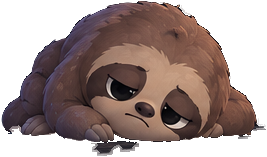
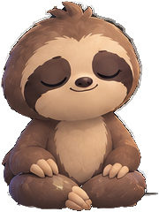

9:41● ● ●
‹


Meditate and
Otto glows

Continue
This screen
Brainrot's "See for yourself!", in 808's colours: the question screens' back arrow and thick bar at the top, Otto on the ground, one line, a slider with his head as the thumb, the gold button. It opens at 50 (Progressing) and the person drags it both ways.
Where it goes: straight after the three breaths, before "Just 8 quick questions", so the first thing he shows you after breathing together is what you do for him.
The line says what practice does, not what skipping it costs. The sad end is on the slider for anyone who drags left; the words never threaten.